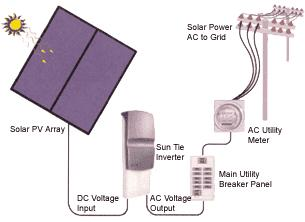
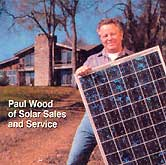

Basics Of Grid-Tied Pv
February/March 2001
Most residential photovoltaic (PV) systems consist of PV modules, a battery bank to store the electricity, a charge controller to regulate the charging of the batteries, and an inverter to change the solar-generated direct current electricity into the more commonly used alternating current. People living in remote areas of the U.S., off the grid, have been relying on these types of PV systems for years. However, more and more people who are already connected to the grid are turning to renewable energy for part or all of their electricity needs. These grid-tied PV systems send solar-generated electricity back into the already existing utility grid.
With a grid-tied system there is no battery bank - the utility company acts as the battery. (Many people choose to keep batteries, however, as a backup in case of grid failure.) When a system produces more electricity than is needed, the excess is sold to the utility company. When the homeowner needs more electricity than is being produced, electricity is bought from the utility company. Under federal law, the Public Utility Regulatory Policy Act (PURPA, Section 210), utility companies are required to buy electricity from renewable energy producers.
The other difference in grid-tied systems is the type of inverter used. Line-tied inverters are designed to sense the presence of grid power and shut off when the grid does. This keeps the PV-generated electricity off the grid in case there are utility people working on it.
The majority of grid-tied PV systems use PV modules mounted on a roof or a pole near the house. However, some systems use PV cells that actually become an integrated part of the building (a common example are PV roof tiles). While these systems may reduce the cost of PV systems, they are still about 50% more expensive than standard PV modules. And standard PV modules don't come cheap.
For more information:
Solar Energy International ,
P.O. Box 715, Carbondale, CO 81623; (970) 963-8855;
fax: (970) 963-8866;
e-mail: sei@solarenergy.org ; Web site:
www.solarenergy.org
Solar Sales & Service ,
White Bluff, TN 37187; (800) 398-5188 or (615) 8761911;
e-mail: SOLARSALES@aol.com
Sacramento Municipal Utility District , P.O. Box 15830, Sacramento, CA 95852-1830; www.smud.org
Home Power Magazine,
P.O. Box 520,
Ashland, OR 97520;
e-mail: hp@homepower.com ;
Web site: www.homepower.com
1 Maka Rukus and Jenny Freely, "Guerrilla Solar." Home Power Magazine, Issue #67, October/ November 1998, page 35.
AT WHAT PRICE?
At 25 to 40 cents per kilowatt hour, PV-generated electricity is still more costly than electricity purchased from our country's extensive electric grid. Still, many people are turning to this clean-energy option for reasons of ecology rather than economy. Most of our electricity comes from coal, oil or large hydroelectric dams, all of which have devastating environmental impacts. The use of solar power can reduce dependence on these environmentally damaging sources. In fact, a one-kilowatt PV system can prevent 150 pounds of coal from being mined and 300 pounds of carbon dioxide from entering the atmosphere each month.
These facts convinced Randy Udall, director of the Community Office of Resource Efficiency (CORE) in Aspen, Colorado that PV is cost-effective. "Conventional energy economics assumes that the future is worthless and the environment doesn't matter," Randy says. "If you value the future or the environment, PV is cost-effective."
To encourage more homeowners to invest in PV systems, CORE started a fi nancing program. Through CORE's program, customers make a small down payment and receive a zero-interest loan to pay for the rest of their system over four to six years. CORE pays the interest on the loan.
SPINNING BACKWARDS
One thing that makes grid-tied PV attractive to homeowners is net metering. Under PURPA, utility customers can sell excess electricity to the utility company. However, the utility only needs to purchase that electricity at the wholesale price - much lower than the retail price. The excess energy is metered using an additional meter that must be installed at the customer's expense. But if the utility offers net metering, the customer can use the excess electricity to offset electricity used during the billing period. Currently, 30 states require at least some utilities to offer net metering. To find out about net metering contact the National Renewable Energy Laboratory in Golden, Colorado, or visit http://www.homepower.com/netmeter.htm .
Related info:
Guerrilla Solar
 Most residential grid-tied solar systems consist of PV modules, an inverter to convert DC power to AC, an extra utility meter, and connections that allow excess power to flow back to the utility company-effectively turning back the energy meter. |
 |
 |